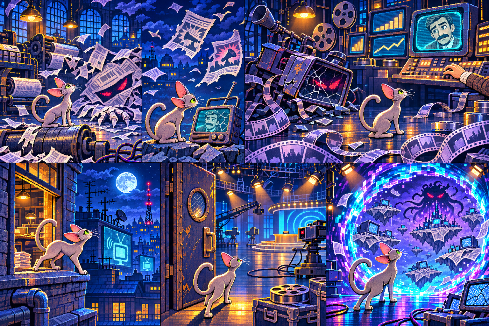

Новые объекты мира Умы
Редакция · крыши · студия · измерение. Макеты в игровом масштабе; кнопка показывает последовательность разрушения.
Разрушаемые устройства
Места появления монстров
Переходы сюжета после мини-боссов

После Распространителя — на крыши; после Агитатора — в студию; после Манипулятора — в измерение Инфошума.
К игре